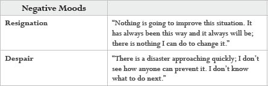
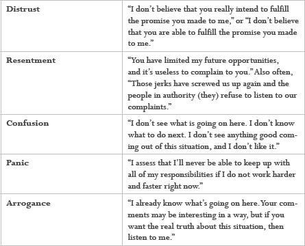
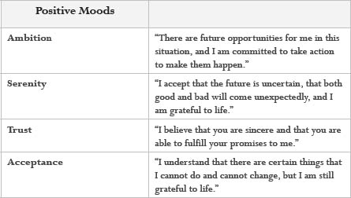
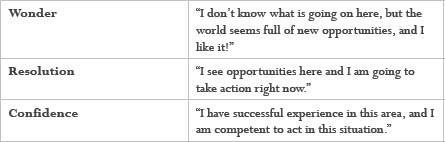

Many people find that they frequently slip into negative, unproductive moods, and, once in these moods, it can be difficult to shift out of them. We suggest that this happens because most people have an interpretation of mood and emotion that limits their power to observe and change their moods. Typically, people believe that their moods are produced by the people and events they encounter. So when things are going well, they’re in a good mood and can be involved, productive, and so on. But even little setbacks put them in a bad mood, in which they are inaccessible to others, unable to concentrate, and ineffective in their work. People are buffeted between these extremes as circumstances dictate. It seems as if the moods that can offer more stability in their work—such as ambition, challenge, and serenity—are available only during special occasions: a promotion, a vacation, the birth of a child. They have no capacity to cultivate these moods as part of their everyday lives.
In speaking of moods, we’re not using the word strictly in its usual sense of “feelings” or “emotions.” We refer instead to the ways in which people’s past experiences predispose them to certain actions. For example, an employee who’s seen many corporate initiatives come and go with little effect is likely to make only the minimum effort when the next announcement comes along. He may do little more than complain to his peers about how out-of-touch executives are, reinforcing the cynical mood of the whole group. In contrast, a consumer who’s received high-quality products and prompt, honest service at a reputable car dealership will probably patronize them again in the future. Her glowing stories of satisfaction will help build the dealership’s reputation in the community.
We can interpret moods in terms of assessments that people have about the future. The employee in our example may expect that the new company effort will not improve the company’s reputation with customers or his own possibilities for advancement and job security. The customer in our other example may expect that if she returns to her favorite dealership for a new car, she’ll receive good value and be treated well. These aren’t assessments that either person makes consciously; it’s simply obvious to the employee that no new initiative is going to turn the company around, and it just wouldn’t occur to the customer to look for a car anywhere else. For this reason, we sometimes refer to a mood as an “automatic assessment.”
The unproductive interpretation of moods leads people to focus on the past, to try to blame their bad moods on some recent event. Since we can’t undo the past, this offers little leverage in controlling moods. We propose that to begin to manage our moods and build stability, we should focus instead on the future. When we interpret moods as assessments about our future prospects, we are able to take action, because the future hasn’t happened yet. We can choose to take responsibility for our moods and to resolve to take actions to improve our prospects.
Another challenge to managing our moods is the fact that we are constantly immersed in the assessments of the people around us. Very soon any group begins to have a mind of its own, something that drives it and gives it a sense of purpose. Any group develops standards for behavior that it expects all members to uphold. We take other people’s opinions as indications of our future, as if they were inevitable truths about our personal character, so there is enormous pressure to conform.
By taking moods out of the purely personal, subjective realm and into the realm of assessment, companies can begin to take action to produce and shift moods in their organizations, teams, and customer relationships. We can design practices for helping people to shift out of unproductive moods, for building trust in internal and customer relationships, and for cultivating a mood of satisfaction with customers.
Whatever the source of a person’s negative mood may be, he or she can begin to shift out of it by:
· Identifying the assessment
The person may ask himself or herself, “What is the assessment about the future implied by my mood?” (Some typical moods and associated assessments are shown on the following page.)
· Grounding the assessment
The person may inquire, “Is this assessment grounded?” By “grounded” we mean that a person can point to specific observable actions and events—not just the opinions of others—to support their assessment. Here are five questions to ask to prepare a grounded assessment:
What is my concern for making this assessment? (What do I want to accomplish with this assessment?)
What domain of action am I restricting it to?
What assertions can I provide to support or refute this assessment?
What standards in this domain am I committed to?
What actions are now possible?
· Speculating about new assessments and actions
When a person decides that a negative assessment is ungrounded, that in itself often begins to break the mood. In either case, the person may ask himself or herself, “What mood and assessment do I want to build toward?” and “What actions can I take that would create a more positive assessment about my prospects?”
· Resolving to shift out of the mood and take action
The person may declare that a different assessment about the future is possible, and that he or she is committed to take the actions that will bring about that new possibility.
Typical Assessments for Some Negative Moods


Typical Assessments for Some Positive Moods


If people do not recognize that moods and assessments can be examined and shifted in this way, negative moods threaten to become permanent lifestyles, as if the future is already settled. Even when they feel good, people are worried about the really bad thing that is going to happen next. People caught in this trap cannot develop serenity or ambition about their future.
Here is where mood begins to be connected with a wider question, beyond any transitory mood or particular situation. For in the long term, a person’s mood—whether he or she moves with confidence, eagerness, and ambition—is driven by his or her interpretation of the future in general. A common belief is that the future is basically an extension of what is going on today. From this, and the notion that moods are assessments about future prospects, it is easy to see how people get trapped in negative moods and become ineffective. If something bad happens, it is as if their entire future will be determined by that event. Everything seems hopeless, and they don’t see any possibility of taking action to repair the damage.
And so we find that to manage our own moods and cultivate enduring strong morale, we need a different understanding of the future as well. We suggest that the most important key to generating moods of challenge, confidence, and ambition is to understand that people create the future in the commitments they make to each other and the actions that they take together. This notion—that we invent the future together—can be the source of a great sense of serenity.
Our capacity for invention is not limitless. We must learn to accept those things that are clearly impossible: we will not live forever, and we cannot fly without machines to help us. But for most of the events and situations that put us into bad moods, we always have a way out—taking action with others. The future is always unfolding and has not happened yet. It’s a future in which a person can make a difference. He or she can be committed to participate in inventing the future. That’s the core of a person’s identity: people see each other in terms of how they work with others to create future possibilities. And when people really own that commitment, they can build moods of challenge and serenity, and avoid getting caught up in temporary setbacks and the moods of others around them.
Moods and Teams
Learning how to manage moods is also a key responsibility of a productive team member. Since negative moods close off possibilities and disrupt our coordination with others, moods are not just “personal.” They are a morale issue and a productivity issue. Managers need to watch the moods of their team and help individuals to manage their moods.
People who fail to manage their moods exhibit a lack of respect for their teammates. Instead of counting on these people to fulfill their role on the team, they constantly have to take up the slack and work around them. In contrast, when we see a particularly effective team at work, the team members seem to be “in tune”’ with each other. While they may not think of it in these terms, they are committed to maintaining their team in a mood of ambition, focused on the future that they are inventing together.
Certainly we are not suggesting that people can avoid being affected by, for example, announcements of layoffs. But when people get trapped in a mood, when it becomes their standard attitude about their work, it is really a personal choice. We suggest that whether they think of it explicitly or not, people take one of two fundamental stances: life is something that they are inventing, or life is something that happens to them, and they react to their circumstances.
When people make this second choice, they are doing two things. They are absolving themselves of responsibility, which can seem like an easy course to take. But they are also cutting themselves off from the power to improve their circumstances, and to build their own identity in the world. The widespread presence of moods of cynicism, victimization, and resentment demonstrate the prevalence of this attitude in many of our institutions today. These moods are a major obstacle to teamwork, as well as to building the trust between different functions of an organization that is required for crossfunctional initiatives.
Cynicism is a kind of resignation in which a person has given up on the possibility of change. Cynics are no longer committed to the values and goals of the team or company. Instead they are hanging on for other reasons, such as their position, salary, benefits, and so on. Frequently these people voice complaints like: “The company is so big that I can never move it.” Or, “Nobody listens to my suggestions.” Or, “They are giving me ‘make work’ and refuse to recognize my true capabilities.”
Victimization is an attitude in which all of a person’s moods and circumstances are the fault of others, or of an unresponsive system. These people live in the story that they have no real power in the organization, but they also have no commitment to build power. Everything that happens to them is beyond their control, and they do not see that this is largely a matter of their own choice.
The resentful person feels that other people in the organization aren’t pulling their weight, but isn’t about to say that outside of a small group of friends. He or she separates the company into three groups: his or her own team, which is working hard and getting things done, the “jerks” that are causing all the problems, and the people in authority who refuse to do anything about these jerks (“them”). It’s a mood in which a person abdicates all personal commitment by refusing to talk to the “jerks” or “them” about what needs to be improved.
People can declare who they want to be and what role they will play in the company. They can commit to the missions of their teams, and to take action toward fulfilling those missions. They can commit to staying out of these destructive moods, and to being open to talking about them when they arise unnoticed. They can be authentically critical and skeptical where they see the organization needs improvement. This means to speak up and try to change things or honestly work to improve their own part of the whole. Above all, they can commit to avoid swallowing or whispering complaints behind peoples’ backs, because that’s the road to resentment. They may be greeted with hostility by some for taking a stand, but in the end, if they can prove that their way is valuable, they will get the credit.
Guidelines for Managing Negative Moods
The purpose of this exercise is to enable you to begin to observe the underlying assessments behind a particular mood, and to begin to identify actions you can take that will shift your assessments and hence your mood. As you identify a negative mood in a particular domain of your life, please follow the following guidelines for exploring your mood and the possibility of shifting it.
1. Awareness
Become aware of your sensations (feelings).
2. Choice
Are you ready to make a commitment to alter this mood? If yes, continue to number three; otherwise, by when will you decide, or are you at peace with this situation and do not see a need to alter your mood?
3. Investigation—what or who is this mood about?
What is the narrative you tell yourself while in this mood?
Is it based on an assessment or an assertion?
If it is an assessment, is it grounded or not?
What standards are you using?
Are they shared by the people you work with?
If it is an assertion, is it true or false?
If true, what is it going to take for you to accept this?
If you realize that it is based on a false assertion, does your realization begin to shift your mood? If not, is your negative mood really about something else?
4. Plan for Action
What’s missing?
Which of the moves from the coordination cycle do you need to make (revoke, counteroffer, request, etc.) to bring about what is missing?
Do you need to make a complaint?
Do you need to apologize?
5. Take Action
With whom and by when?
6. Complete
Have new opportunities opened up as the result of completing this exercise? If so, what request or offer could you now make?